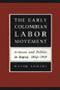
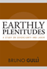
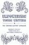
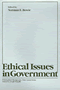
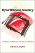

Browse
other Titles:
A B C
D E F
G H I
J K L
M N O
P Q R
S T U
V W X
Y Z |
 |
E.
P. Thompson
Critical Perspectives
edited
by Kaye, Harvey J. and Keith McClelland
350 pp • Spring 1990
paper 978-0-87722-742-7
cloth 978-0-87722-730-4
|
 |
The
Eagles Encyclopedia
Didinger,
Ray and Robert S. Lyons
336 pp • 8.5x11 • Fall 2005
cloth 978-1-59213-449-6
|
|  |
The
Early Colombian Labor Movement
Artisans and Politics in Bogota, 1832-1919
Sowell,
David
272 pp • 6x9 • Fall 1992
cloth 978-0-87722-965-0 |
 |
The
Early Essays
edited
by Regan, Tom
248 pp • 6x9 • Fall 1986
cloth 978-0-87722-442-6
|
|
Earth
Muse
Feminism, Nature, and Art
Bigwood,
Carol
320 pp • 6x9 • Fall 1992
paper 978-0-87722-987-2
cloth 978-0-87722-986-5 |
 |
Earthly Plenitudes
A Study on Sovereignty and Labor
Gulli, Bruno
New in Paperback!
200 pp • 6x9 • Fall 2009
paper 978-1-59213-980-4
cloth 978-1-59213-979-8
|
 |
East
End 1888
Life in a London Burough Among the Laboring Poor
Fishman,
William J.
352 pp • Spring 1988
cloth 978-0-87722-572-0 |
 |
East
Indian Music in the West Indies
Tân-Singing, Chutney, and the Making of Indo-Caribbean Culture
Manuel,
Peter
288 pp • 7x10 • Spring 2000
paper 978-1-56639-763-6
cloth 978-1-56639-762-9
|
 |
East Is West and West Is East
Gender, Culture, and Interwar Encounters between Asia and America
Kuo, Karen
220 pp • 5.5x8.25 • Fall 2012
paper 978-1-4399-0587-6
cloth 978-1-4399-0586-9
|
 |
Echoes
from the Holocaust
Philosophical Reflections on a Dark Time
edited
by Rosenberg, Alan and Gerald E. Myers
472 pp • Spring 1988
paper 978-0-87722-686-4
cloth 978-0-87722-539-3 |
 |
Ecofeminism
edited
by Gaard, Greta
304 pp • 6x9 • Fall 1992
paper 978-0-87722-989-6
cloth 978-0-87722-988-9
|
 |
Ecological
Politics
Ecofeminists and the Greens
Gaard,
Greta
337 pp • 6x9 • Fall 1997
paper 978-1-56639-570-0
cloth 978-1-56639-569-4
|

|
Ecomusicology
Rock, Folk, and the Environment
Pedelty, Mark
242 pp • 6x9 • Spring 2012
paper 978-1-4399-0712-2
cloth 978-1-4399-0711-5 |

|
Economic Citizens
A Narrative of Asian American Visibility
So, Christine
190 pp • 6x9 • Fall 2007
paper 978-1-59213-585-1
cloth 978-1-59213-584-4
|

|
Economies of Desire
Sex and Tourism in Cuba and the Dominican Republic
Cabezas, Amalia L.
232 pp • 5.5x8.25 • Spring 2009
paper 978-1-59213-750-3
cloth 978-1-59213-749-7
|
 |
Education
for Struggle
The American Labor Colleges of the 1920s and 1930s
Altenbaugh,
Richard J.
339 pp • 6x9 • Spring 1990
cloth 978-0-87722-680-2
|
 |
The
Education of a University President
Wachman,
Marvin, foreword by James W. Hilty
240 pp • 6x9 • Spring 2005
cloth 978-1-59213-376-5
|
 |
The
Effects of the Nation
Mexican Art in an Age of Globalization
edited
by Good, Carl and John V. Waldron
232 pp • 6x9 • Spring 2001
paper 978-1-56639-866-4
cloth 978-1-56639-865-7
|
 |
El
Salvador in the Eighties
Counterinsurgency and Revolution
Uclés,
Mario Lungo, introduction by Arthur Schmidt, translated by Amelia
F. Shogan
256 pp • 5.5x8.25 • Spring 1996
paper 978-1-56639-432-1
cloth 978-1-56639-431-4 |
 |
Elements of Discipline
Nine Principles for Teachers and Parents
Greenspan, Stephen, foreword by Arnold Sameroff
212 pp • 6x9 • Fall 2012
paper 978-1-4399-0897-6
cloth 978-1-4399-0896-9
|
 |
Elements
of Ethics
Moore,
G. E., edited by Tom Regan
272 pp • 6x9 • Fall 1991
paper 978-1-59213-194-5
cloth 978-0-87722-770-0
|
 |
The
Elements of Metaphysics
Carter,
William R.
208 pp • Fall 1989
cloth 978-0-87722-619-2 |
 |
The
Elements of Moral Philosophy
Rachels,
James
250 pp • Fall 1985
cloth 978-0-87722-405-1 |
 |
Elie
Wiesel and the Politics of Moral Leadership
Chmiel,
Mark
248 pp • 6x9 • Spring 2001
cloth 978-1-56639-857-2
|

|
Emergency
Broadcasting and 1930s American Radio
Miller,
Edward D.
264 pp • 5.5x8.25 • Fall 2002
paper 978-1-56639-993-7
cloth 978-1-56639-992-0
|

|
Empire
City
The Making and Meaning of the New York City Landscape
Scobey,
David M.
352 pp • 7x10 • Spring 2002
paper 978-1-59213-235-5
cloth 978-1-56639-950-0
|
 |
Empowered by Design
Decentralization and the Gender Policy Trifecta
Rincker, Meg
242 pp • 6x9 • Spring 2017
paper 978-1-4399-1397-0
cloth 978-1-4399-1396-3
|

|
Empowering Young Writers
The Writers Matter Approach
Yost, Deborah S., Robert Vogel and Kimberly E. Lewinski
192 pp • 6x9 • Spring 2014
paper 978-1-4399-1082-5
cloth 978-1-4399-1081-8 |

|
The End of Empires
African Americans and India
Horne, Gerald
274 pp • 6x9• Fall 2008
paper 978-1-59213-900-2
cloth 978-1-59213-899-9
|

|
The End of White World Supremacy
Black Internationalism and the Problem of the Color Line
Bush, Roderick
264 pp • 6x9• Spring 2009
paper 978-1-59213-573-8
cloth 978-1-59213-572-1
|

|
Ending
Poverty as We Know It
Guaranteeing a Right to a Job at a Living Wage
Quigley,
William P.
256 pp • 6x9 • Spring 2003
paper 978-1-59213-033-7
cloth 978-1-59213-032-0
|

|
Engineering
Culture
Control and Commitment in a High-Tech Corporation
Kunda, Gideon
Revised Edition
320 pp • 6x9 • Fall 2006
paper 978-1-59213-546-2
cloth 978-1-59213-545-5
|

|
Engineering
Disability
Public Policy and Compensatory Technology
Tanenbaum,
Sandra J.
184 pp • Spring 1986
cloth 978-0-87722-403-7 |

|
The Enigmatic Academy
Class, Bureaucracy, and Religion in American Education
Churchill, Christian J., and Gerald E. Levy
234 pp • 6x9 • Spring 2012
paper 978-1-4399-0784-9
cloth 978-1-4399-0783-2 |

|
Entry
Denied
Exclusion and the Chinese Community in America, 1882-1943
Chan,
Sucheng
320 pp • Spring 1991
paper 978-1-56639-201-3
cloth 978-0-87722-798-4 |

|
Environmental
Accidents
Personal Injury and Public Responsibiltiy
Gaskins,
Richard H.
440 pp • Spring 1989
paper 978-0-87722-708-3
cloth 978-0-87722-609-3 |

|
Environmental Activism and the Urban Crisis
Baltimore, St. Louis, Chicago
Gioielli, Robert R.
224 pp • 6x9 • Spring 2014
paper 978-1-4399-0466-4
cloth 978-1-4399-0465-7 |

|
Environmental
Change
Federal Courts and the EPA
O'Leary,
Rosemary
280 pp • 5.5x8.25 • Fall 1993
paper 978-1-56639-396-6
cloth 978-1-56639-095-8
|

|
Environmental
Ethics
Duties to and Values in the Natural World
Rolston,
III, Holmes
408 pp • Fall 1987
paper 978-0-87722-628-4
cloth 978-0-87722-501-0
|

|
Environmental
Ethics and Forestry
A Reader
edited
by List, Peter C.
416 pp • 7x10 • Spring 2000
paper 978-1-56639-785-8
cloth 978-1-56639-784-1
|

|
Envisioning Emancipation
Black Americans and the End of Slavery
Willis,
Deborah and Barbara Krauthamer
New in Paperback!
240 pp • 7x10 • Spring 2017
paper 978-1-4399-0986-7
cloth 978-1-4399-0985-0
|

|
Equal
Employment Policy for Women
Strategies for Implementation in the United States, Canada, and
Western Europe
Ratner,
Ronnie Steinberg
Fall 1979
cloth 978-0-87722-156-2 |
|
Equal Play
Title IX and Social Change
edited by Hogshead-Makar, Nancy and Andrew Zimbalist
328 pp • 7x10 • Fall 2007
paper 978-1-59213-380-2
cloth 978-1-59213-379-6
|

|
Espejos y ventanas (Mirrors and Windows)
historias orales de trabajadores agricolos y sus familias (Oral Histories of Mexican Farmworkers and the Families)
edited by Lyons, Mark, and August Tarrier
318 pp • 6x9 • Spring 2012
paper 978-0-97129-966-5 |

|
An
Essay on African Philosophical Thought
The Akan Conceptual Scheme
Gyekye,
Kwame
296 pp • 5.5x8.25 • Fall 1995
paper 978-1-56639-380-5
cloth 978-1-56639-383-6
|

|
Essays on Twentieth Century History
Edited by Adas, Michael for the American Historical Association
350 pp • 6x9 • Spring 2010
paper 978-1-4399-0270-7
cloth 978-1-4399-0269-1
|
 |
The Eternal Present of Sport
Rethinking Sport and Religion
Grano, Daniel A.
288 pp • 6x9 • Spring 2017
paper 978-1-4399-1280-5
cloth 978-1-4399-1279-9 |

|
Ethical Borders
NAFTA, Globalization, and Mexican Migration
Hing, Bill Ong
248 pp • 6x9 • Spring 2010
paper 978-1-59213-925-5
cloth 978-1-59213-924-8
|

|
The
Ethical Engineer
An 'Ethics Construction Kit' Places Engineering in a New Light
Schlossberger,
Eugene
296 pp • 5.5x8.25 • Fall 1993
paper 978-1-56639-057-6
cloth 978-1-56639-056-9
|

|
Ethical
Issues in Government
edited
by Bowie, Norman E.
325 pp • Spring 1981
cloth 978-0-87722-165-4 |

|
The Ethics of Care
A Feminist Approach to Human Security
Robinson, Fiona
200 pp • 5.5x8.25 • Fall 2011
paper 978-1-4399-0066-6
cloth 978-1-4399-0065-9
|

|
Ethnic
Pride, American Patriotism
Slovaks and Other New Immigrants in the Interwar Era
Alexander,
June Granatir
296 pp • 6x9 • Spring 2004
paper 978-1-59213-252-2
cloth 978-1-59213-251-5
|

|
Ethnic Renewal in Philadelphia's Chinatown
Space, Place, and Struggle
Wilson, Kathryn E.
278 pp • 6x9 • Spring 2015
paper 978-1-4399-1215-7
cloth 978-1-4399-1214-0
|

|
Ethnographies of Youth and Temporality
Time Objectified
edited by Dalsgård, Anne Line, Martin Demant Frederiksen, Susanne Højlund and Lotte Meinert
Afterword by Michael Flaherty
206 pp • 6x9 • Fall 2013
cloth 978-1-4399-1066-5 |

|
Ethnicity and Inequality in Hawai’i
Okamura, Jonathan Y.
256 pp • 6x9 • Spring 2008
paper 978-1-59213-756-5
cloth 978-1-59213-755-8
|

|
Evaluating
Art
Dickie,
George
208 pp • Spring 1989
paper 978-0-87722-683-3
cloth 978-0-87722-597-3 |

|
Evil
and the Evidence for God
The Challenge of John Hick’s Theodicy
Geivett,
R. Douglas, afterword by John Hick
288 pp • 6x9 • Fall 1993
paper 978-1-56639-397-3
cloth 978-1-56639-094-1
|
|
The
Evolution of an American Town
Newtown, New York, 1642-1775
Kross,
Jessica
277 pp • Fall 1982
cloth 978-0-87722-277-4 |

|
Exiled
Memories
Stories of Iranian Diaspora
Sullivan,
Zohreh T.
328 pp • 6x9 • Fall 2000
paper 978-1-56639-843-5
cloth 978-1-56639-842-8
|
|
Expected
Miracles
Surgeons at Work
Cassell,
Joan
259 pp • Spring 1991
paper 978-0-87722-838-7
cloth 978-0-87722-804-2 |
|
Exploiting the Wilderness
An Analysis of Wildlife Crime
Warchol, Greg L.
210 pp • 6x9 • Fall 2017
paper 978-1-4399-1367-3
cloth 978-1-4399-1366-6
|

|
Explorations
on the Edge of Time
The Prospects for World Order
Falk,
Richard
256 pp • Fall 1991
paper 978-1-56639-080-4
cloth 978-0-87722-860-8 |
 |
Exploring the Roots of Digital and Media Literacy through Personal Narrative
edited by Hobbs, Renee
226 pp • 5.5x8.25 • Spring 2016
paper 978-1-4399-1158-7
cloth 978-1-4399-1157-0
|

|
Extradition,
Politics, and Human Rights
Pyle,
Christopher H.
456 pp • 7x10 • Fall 2000
paper 978-1-56639-823-7
cloth 978-1-56639-822-0
|

|
Eyes
Without Country
Searching for a Palestinian Strategy of Liberation
Dajani,
Souad R.
256 pp • 6x9 • Fall 1994
paper 978-1-56639-241-9
cloth 978-1-56639-240-2 |